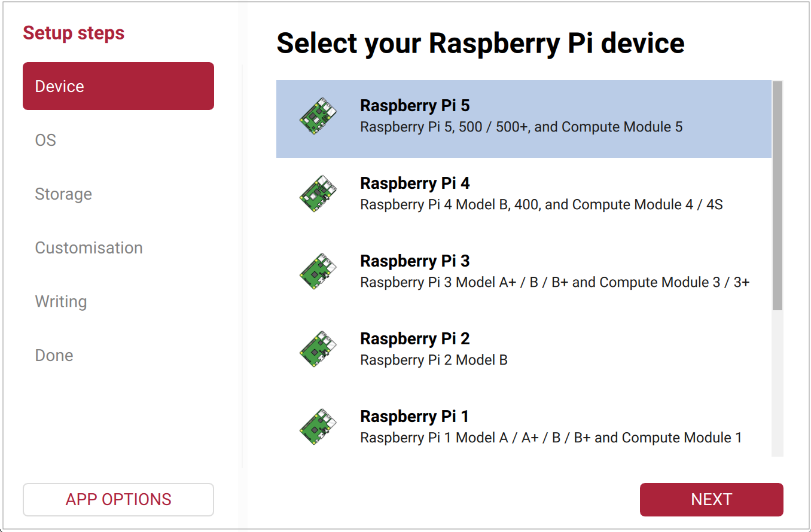
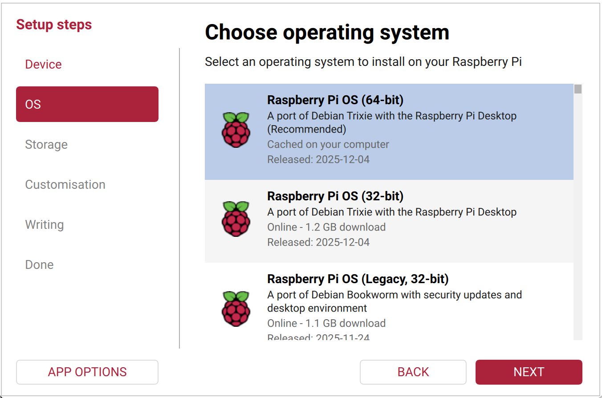
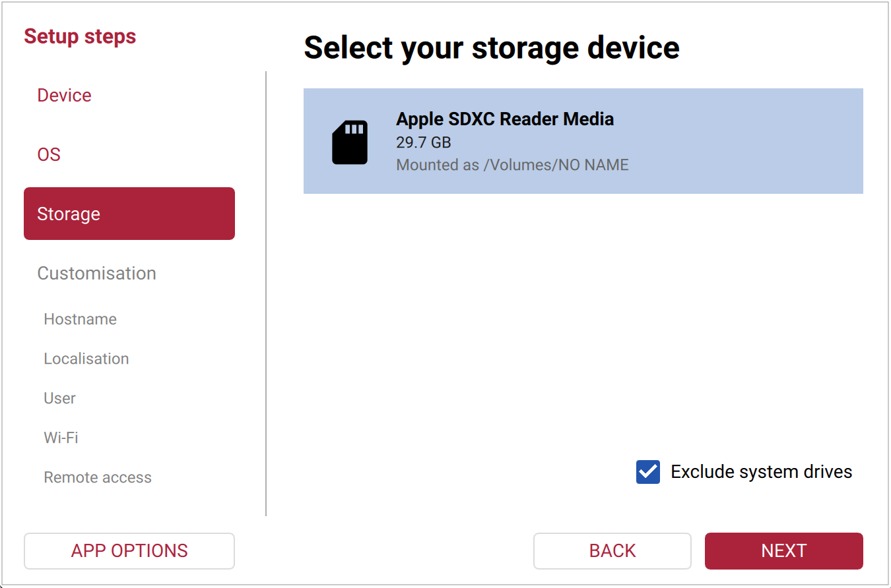
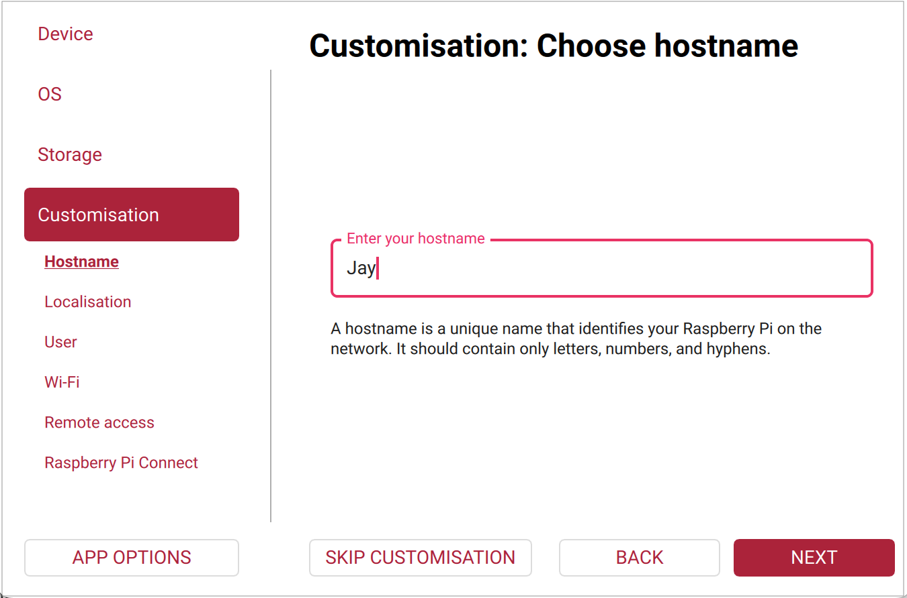
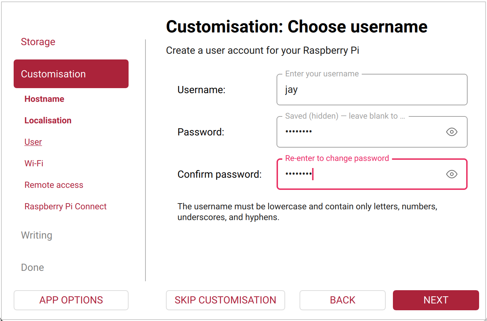
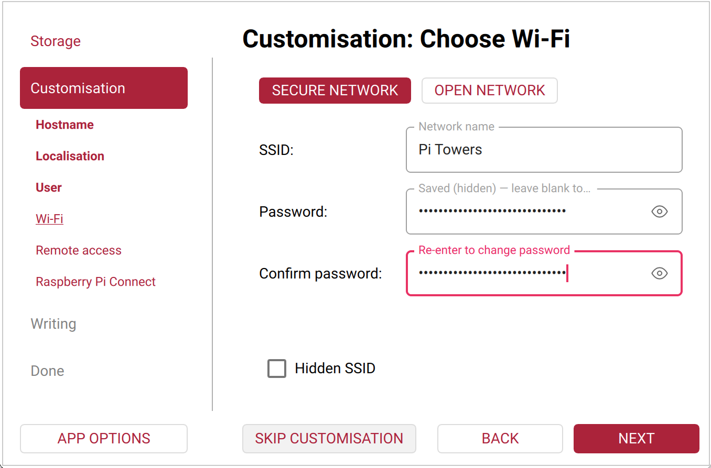
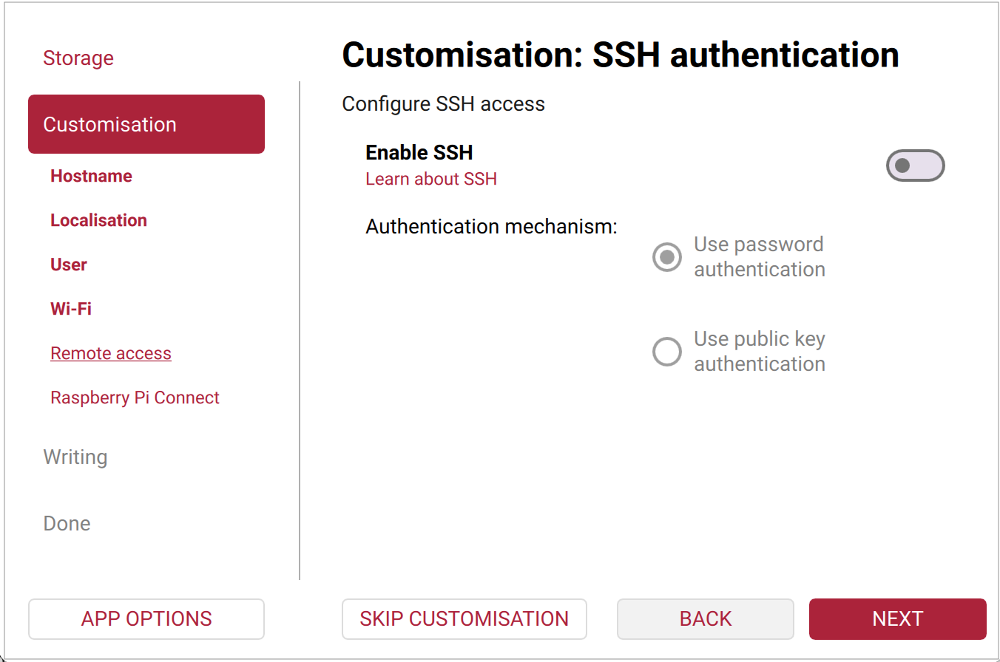
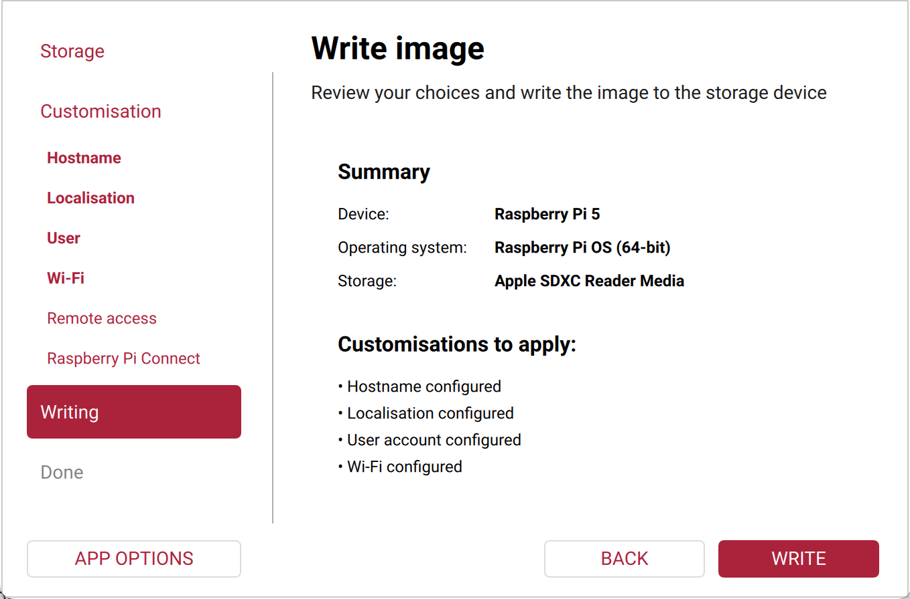
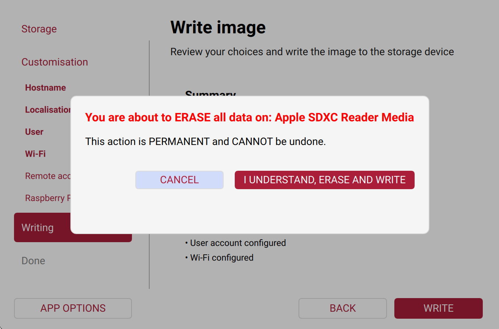

Flash Raspberry Pi OS
This guide uses a Raspberry Pi 5 and the official Raspberry Pi imaging workflow. Complete the operating system setup before connecting or configuring the e-Paper HAT.
What You Need
Raspberry Pi 5 and a suitable USB-C power supply.
A reliable microSD card (32 GB or larger is recommended) and a card reader.
A Windows, macOS, or Linux computer connected to the internet.
The official Raspberry Pi Imager.
Recommended Software
The versions below were checked on 10 August 2026:
Raspberry Pi Imager 2.0.8 — the latest stable release. Do not use the 2.0.9 pre-release for a new setup.
Raspberry Pi OS (64-bit) — the recommended current release for Raspberry Pi 5: Debian 13 (Trixie) with Linux kernel 6.18.
Raspberry Pi Imager automatically offers the recommended operating system for the selected device, so downloading an .img file manually is not necessary.
Install Raspberry Pi Imager
Open the official Raspberry Pi software page and download Raspberry Pi Imager for your computer.
Run the installer, then start Raspberry Pi Imager.
Insert the microSD card into the computer’s card reader.
Choose the Device, OS, and Storage
Select Choose Device, then select Raspberry Pi 5.

In the Device tab, select Raspberry Pi 5, then click Next.
Select Choose OS and choose Raspberry Pi OS (64-bit). This is the recommended desktop image for Raspberry Pi 5.

The recommended Raspberry Pi OS for the selected device appears at the top of the list.
Insert the microSD card into the reader. Select Choose Storage, then select the target microSD card by its capacity and name.

Keep Exclude system drives enabled and choose only the microSD card to be erased.
{kind=link}
{kind=link}
{kind=link}
Warning
Writing an image erases the selected storage device. Check its capacity and name carefully before continuing. Disconnect other removable drives if you are unsure which one is the microSD card.
Configure OS Customisation
Click Next, then choose Edit Settings when Imager offers OS customisation. Configure these settings before writing the card.
In Hostname, enter a short device name, such as
lafvin-pi5. Use only letters, numbers, and hyphens. The device will later be available atlafvin-pi5.localon most local networks.
In Localisation, select your city or set the time zone, keyboard layout, and wireless LAN country.
In User, set a lowercase username and a strong password. These are required for SSH and
sudocommands.
In Wi-Fi, select the correct network, enter its password, and enable Hidden SSID only when the network name is not broadcast.

In Remote Access, enable SSH if you will use the Pi without a monitor. Choose password authentication for a simple local setup, or public-key authentication for stronger security.

{kind=link}
{kind=link}
{kind=link}
{kind=link}
Click Save, then choose Yes to apply the settings to the image.
Write and Verify the Image
Review the selected device, operating system, storage device, and customisation settings. Click Write only when every item is correct.

The summary is the last opportunity to check the target storage device.
In the erase confirmation dialog, select I understand, erase and write.

Wait for Raspberry Pi Imager to finish both writing and verification. Do not remove the card during this process.
When Imager reports Write Successful, safely eject the microSD card from the computer.
{kind=link}
{kind=link}
First Boot on Raspberry Pi 5
Ensure the Raspberry Pi 5 is powered off.
Insert the prepared microSD card, then connect a display, keyboard, and network cable if required.
Connect power to boot the Pi. If OS customisation was used, the configured account and network settings are applied on first boot.
After you reach the desktop or connect through SSH, update the system:
sudo apt update sudo apt full-upgrade -y sudo reboot
Power off the Pi before connecting the e-Paper HAT, then continue with Raspberry Pi User Guide.
Troubleshooting
The Pi does not boot: confirm the card write completed verification, use a suitable power supply, and try writing the image again.
Wi-Fi is unavailable: recheck the SSID, password, wireless country, and whether the network is hidden.
SSH connection fails: confirm SSH was enabled during OS customisation and use the hostname or IP address shown by your router.